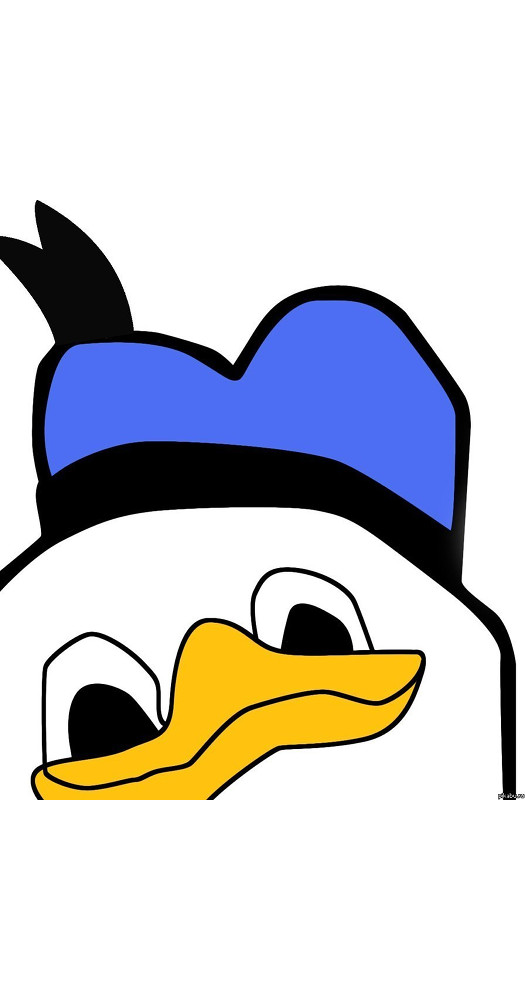

Справляемся с зависимостями в 2018-м
Справляемся с зависимостями в 2018-м: Pipenv
Николай Сасковец
Инженер-программист
- Full Stack Web Developer
- Devops-энтузиаст
- N лет играю с питоном
- ~ 4 месяца трогаю Pipenv
Кто пользуется или использовал Pipenv?
üôãü誂Äç‚ôÇÔ∏è
üôãü躂Äç‚ôÄÔ∏è
Кто пользуется или использовал Pip?
üôãü躂Äç‚ôÇÔ∏è
üôãü誂Äç‚ôÇÔ∏è
üôãü躂Äç‚ôÄÔ∏è
üôãü誂Äç‚ôÄÔ∏è
Pipenv — инструмент, который привносит в python всё то лучшее, что есть в системах пакетирования для других языков
Что такое Pipenv на самом деле?
Инструмент для приложений, не библиотек, который может:
- Управлять окружениями
(env)
- Управлять пакетами: устанавливать и удалять
(pip)
- Устанавливать детерминированный набор пакетов
(Pipfile.lock)
Управление окружениями
- Используется virtualenv под капотом.
- Все виртуальные окружения, по умолчанию, хранятся в каталоге
~/.venvs.
- Это можно изменить:
export WORKON_HOME=~/.venvs
- Или даже так:
export PIPENV_VENV_IN_PROJECT=True
(окружение будет в каталоге .venv внутри каталога проекта)
Работа внутри виртуального окружения
- Запустить скрипт с нужным виртуальным окружением единоразово:
pipenv run script-name
- Активировать виртуальное окружение для выполнения команд в интерактивном режиме:
pipenv shell
Возможные проблемы с virtualenv + Pipenv
- В shell режиме у некоторых людей появлялись проблемы с башем
- В run режиме не устанавливается переменная
$VIRTUAL_ENV, соответствующая пути к виртуальному окружению
Управление пакетами
Можно устанавливать пакеты:
pipenv install Flask
Можно удалять пакеты:
pipenv uninstall Flask
А ещё можно посмотреть граф зависимостей:
pipenv graph
Управление пакетами: pipenv graph
flower==0.9.2
- babel [required: >=1.0, installed: 2.6.0]
- pytz [required: >=0a, installed: 2018.7]
- celery [required: >=3.1.0, installed: 4.2.1]
- billiard [required: >=3.5.0.2,<3.6.0, installed: 3.5.0.4]
- kombu [required: >=4.2.0,<5.0, installed: 4.2.1]
- amqp [required: >=2.1.4,<3.0, installed: 2.3.2]
- vine [required: >=1.1.3, installed: 1.1.4]
Управление пакетами: pipenv install
Два варианта.
- Указываем пакет, который нужно установить:
pipenv install Flask
- добавляет Flask в
Pipfile
- устанавливает Flask
- обновляет
Pipfile.lock
- Не указываем пакет:
pipenv install
- устанавливает всё из
Pipfile
- обновляет
Pipfile.lock
Управление пакетами: Pipfile
Список необходимых для установки пакетов декларируется в файле Pipfile, вместо привычного всем requirements.txt.
Pipfile:
- Использует TOML для простоты чтения и написание
- Позволяет указать два списка пакетов: packages и dev-packages (для окружения разработчика)
- Стремится стать новым стандартом, заменой requirements.txt
Управление пакетами: Pipfile, пример
[[source]]
url = "https://pypi.org/simple"
verify_ssl = true
name = "pypi"
[packages]
django = "*"
celery = "*"
[dev-packages]
"flake8" = "*"
moto = "==1.3.4"
[requires]
python_version = "3.6"
Управление пакетами: Pipfile, пример 2
...
[packages]
elasticsearch-dsl = "<6.0.0,>=5.0.0"
elasticsearch = "<6.0.0,>=5.0.0"
...
api_client = {git =
"ssh://git@gitlab.com/something/api-client.git",
ref = "v1.0.2"}
...
Детерминированность: Pipfile.lock
pipenv lock — генерация Pipfile.lockpipenv sync — установка пакетов, указанных в Pipfile.lockpipenv clean — удаление из виртуального окружения всех пакетов, которые не указаны в Pipfile.lock
Детерминированность: Pipfile.lock, что внутри?
- Внутри Pipfile.lock находится список всех установленных пакетов, указанных в Pipfile, с запинеными версиями.
- А также указаны все зависимости этих пакетов, также с запинеными версиями.
- А также указаны хэш-суммы всех перечисленных пакетов
Неужели всё так хорошо?
Не очень
Неужели всё так хорошо?

Неужели всё так хорошо?
- Pipenv very slow. Takes an hour to install and lock. [#2873]
- Pipenv ignores explicitly specified index for package [#2730] (closed)
- Pipenv is installing things without executing setup.py in the target environment [Tornado #2433]
Что, если не Pipenv?
Your tool of choice these days should be Pipenv